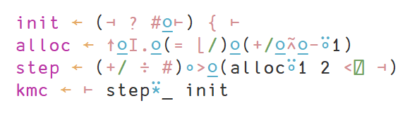
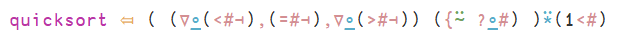

J can look like APL or English
Redisplaying the ASCII notation of J as APL characters.
J1 is a concise, interpreted array programming language which looks infamously like line noise. It is the successor to APL, which is a concise, interpreted array programming language which looks infamously like hieroglyphics.
Because J uses only ASCII characters, it has to condense a lot of meaning into a constrained symbol set. This means a single character often has multiple meanings.
Making J look like APL
APL, in contrast with J, uses unique, distinctive symbols with less overloading. The visual relationship between APL symbols and concepts is somewhat clearer than that of J.
Many J primitive functions map directly to APL primitive functions. It is therefore relatively easy to naively render J primitives as the corresponding APL symbol using extensions such as pretty-mode and/or prettify-symbols-mode in Emacs. For J primitives which don't have an APL equivalent, we have to get a bit more creative.
Here is an excerpt from my Emacs init file showing an example set of J to APL primitive mappings. This requires pretty-mode and j-mode.
pretty-mode and j-mode.
(require 'pretty-mode)
(setq j-symbols
'(("=\\." . ?←)
("=:" . ?⤆)
("_:" . ?∞)
("<:" . ?≤)
(">:" . ?≥)
(">\\." . ?⌈)
("<\\." . ?⌊)
("\\*" . ?×)
("%" . ?÷)
("\\+\\." . ?∨)
("-\\." . ?¬)
("*\\." . ?∧)
("%\\." . ?⌹)
("\\+:" . ?⍱)
("-:" . ?≡)
("*:" . ?⍲)
("%:" . ?√)
("\\^\\." . ?⍟)
("\\^:" . ?⍣)
("\\$" . ?⍴)
("\\$\\." . ?ς)
("\\$:" . ?∇)
("~" . ?⍨)
("~\\." . ?∪)
("~:" . ?≠)
("|\\." . ?⌽)
("|:" . ?⍉)
(",\\." . ?⍪)
(",:" . ?⍿)
(";:" . ?⍧)
("#\\." . ?⊥)
("#:" . ?⊤)
("/\\." . ?⍁)
("\\\\\\." . ?⍂)
("/:" . ?⍋)
("\\\\:" . ?⍒)
("\\]" . ?⊢)
("\\[" . ?⊣)
("\\[:" . ?⍅)
("{\\." . ?↑)
("}\\." . ?↓)
("{:" . ?⍏)
("}:" . ?⍖)
("\"" . ?⍤)
("\"\\." . ?⍎)
("\":" . ?⍕)
("`" . ?⍮)
("@" . ?⍛)
("@\\." . ?⌼)
("@:" . ?⍜)
("\\&" . ?∘)
("\\&\\." . ?↺)
("\\&\\.>" . ?¨)
("\\&:" . ?⌾)
("\\?\\." . ?⍰)
))
(defun prettify-j ()
(progn
(push '("a." . ?æ) prettify-symbols-alist)
(push '("a:" . ?⍬) prettify-symbols-alist)
(push '("A:" . ?⅍) prettify-symbols-alist)
(push '("C." . ?ℂ) prettify-symbols-alist)
(push '("d." . ?δ) prettify-symbols-alist)
(push '("D." . ?Δ) prettify-symbols-alist)
(push '("D:" . ?⌳) prettify-symbols-alist)
(push '("e." . ?∊) prettify-symbols-alist)
(push '("E." . ?⍷) prettify-symbols-alist)
(push '("f." . ?ℱ) prettify-symbols-alist)
(push '("i." . ?⍳) prettify-symbols-alist)
(push '("i:" . ?ᵼ) prettify-symbols-alist)
(push '("I." . ?⍸) prettify-symbols-alist)
(push '("j." . ?ⅉ) prettify-symbols-alist)
(push '("L." . ?ℒ) prettify-symbols-alist)
(push '("NB." . ?⍝) prettify-symbols-alist)
(push '("p." . ?ℙ) prettify-symbols-alist)
(push '("p:" . ?⅌) prettify-symbols-alist)
(push '("q:" . ?ℚ) prettify-symbols-alist)
(push '("r." . ?∡) prettify-symbols-alist)
(push '("y" . ?ω) prettify-symbols-alist)
(push '("x" . ?α) prettify-symbols-alist)
(push '("u" . ?⍶) prettify-symbols-alist)
(push '("v" . ?⍹) prettify-symbols-alist)
(prettify-symbols-mode)))
(pretty-add-keywords 'inferior-j-mode j-symbols)
(pretty-add-keywords 'j-mode j-symbols)
(add-hook 'inferior-j-mode-hook 'turn-on-pretty-mode)
(add-hook 'inferior-j-mode-hook 'turn-off-smartparens-mode)
(add-hook 'inferior-j-mode-hook 'prettify-j)
(add-hook 'j-mode-hook 'turn-on-pretty-mode)
(add-hook 'j-mode-hook 'turn-off-smartparens-mode)
(add-hook 'j-mode-hook 'prettify-j)
Here is a naive k-means clustering implementation in plain J:
init =. ([ ? #@:]) { ]
alloc =. {.@:I.@:(= <./)@:(+/@:*:@:-"1)
step =. (+/ % #)&>@:(alloc"1 2 </. [)
kmc =. ] step^:_ init
Here is how it looks like in Emacs with pretty-mode replacing many of the symbols:

Here is another example, using Roger Hui's quicksort implementation from the J Software Wiki:
The original J:
quicksort=: (($:@(<#[) , (=#[) , $:@(>#[)) ({~ ?@#)) ^: (1<#)
And J displayed with APL-like glyphs:

This is probably equally unreadable if you are not already familiar with APL2, but I do find it somewhat easier to read than the plain ASCII.
I've put together a demo of using J in an APL-like fashion in the following video, which also goes through the k-means clustering code:
Making J look like English
J can also be written like English. The primitives addon for J assigns English aliases for all of J's symbolic primitives. You can also define new aliases freely.
The following is an English translation of the k-means clustering code in J. The functions are defined in a point-free style, which tends to be idiomatic in J, so no intermediate variables are actually declared – the primitive functions are instead composed together similar to pure functional programming in other languages.
First, the primitives addon is loaded and the following convenience aliases are defined. These are general enough that these could go in a utilities script.
load 'primitives' fold =: insert sum =: plus fold minimum =: min fold mean =: sum divide tally vectors =: rank 1 then =: conjunction : ' v at u' groupby =: dyad : 'y (box key) x'
K-means clustering can then be expressed with the following J code3.
kmc =: right (step power infinity) initialise initialise =: (left deal tally at right) from right step =: (left groupby allocate rank 1 2) then (mean every) allocate =: euclidean then (equal minimum) then indices then head euclidean =: (minus then square then sum) vectors
This has the advantage that the code almost just uses plain English. It's easy to write on a phone (J has Android and iPhone versions), you could dictate it, and you could spellcheck it too.
Unfortunately, you still need to understand J's semantics and parsing to read and write the English version, and having attempted to write J like this, it feels much less comfortable than vanilla or APL-like J. I wouldn't recommend writing J like this forever. It's an interesting exercise, but it became very apparent when I was writing this sample exactly why Iverson's Notation as a Tool of Thought is powerful.
Footnotes:
J was developed by Kenneth Iverson, the original developer of APL, and Roger Hui.
While the characters look more similar to APL characters, the code is not written like idiomatic APL (at least, not idiomatic traditional APL). This k-means implementation makes use of J's support for tacit/point-free programming. Some APL implementations, such as Dyalog APL, also support this style of programming.
kmc is a dyadic function which takes a left integer scalar argument (indicating k) and a right numerical table argument (the data table, with rows corresponding to samples and columns corresponding to sample dimensions).